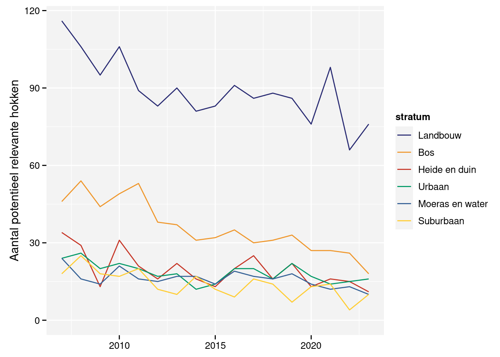

Verwerking van de gegevens
1 Selectie van relevante gegevens per soort
Hoewel we alle waargenomen vogelsoorten op een meetpunt noteren, toch zijn niet alle hokken even relevant voor een bepaalde soort. Om de redenering op te bouwen, beschouwen we een fictieve soort die enkel op een afgelegen eiland voorkomt. Alle vogeltellingen buiten dit eiland zijn uiteraard niet informatief voor wijzigingen in de aantallen van deze fictieve soort. Buiten het eiland zullen de getelde aantallen immers per definitie nul zijn. Wanneer we deze tellingen toch zouden in rekening brengen, dan zullen ze de globale trend afvlakken. De globale trend is min of meer equivalent met een “gemiddelde” trend over de verschillende locaties. Als een locatie steeds nul geeft, dan zijn lokaal de aantallen wiskundig “stabiel” (geen lokale trend). Daarom is het noodzakelijk om de locaties die niet relevant zijn voor een soort buiten beschouwing te houden.
In Vlaanderen is de situatie niet zo zwart-wit als bij het voorbeeld met het afgelegen eiland. Daarom hebben nood aan een set regels die we toepassen op de beschikbare gegevens.
- We beschouwen een hok als relevant voor een soort wanneer we deze soort tijdens minstens twee verschillende driejarige cycli waarnemen. Op deze manier sluiten we hokken uit waar de soort nooit of slechts toevallig waargenomen is. Hokken die slechts binnen één driejarige cyclus onderzocht zijn, kunnen we hierdoor voorlopig niet gebruiken. Figuur 1 geeft een overzicht van het aantal hokken die gedurende minstens twee cycli onderzocht zijn.
- Binnen een hok is een meetpunt pas relevant wanneer we de soort er minstens eenmaal waarnemen.
- Een stratum is relevant voor een soort wanneer het minstens drie relevante hokken bevat.
- Op basis van de overblijvende gegevens berekenen we het (meetkundig1) gemiddelde van de aantallen in elk van de drie perioden. De periode met het hoogste gemiddelde gebruiken we als referentieperiode. We houden enkel de periodes waarbij het gemiddelde minstens 15% van de referentieperiode bedraagt. Op deze manier sluiten we periodes uit waarbij de soort zelden gezien wordt. Bijvoorbeeld een trekvogel die pas in de loop van de tweede periode toekomt en waarvoor de eerste periode bijgevolg niet relevant is.
- We passen de regels voor relevante hokken en strata opnieuw toe. Het negeren van een of twee irrelevante periodes kan er voor zorgen dat een hok niet langer relevant is.
Na het toepassen van deze regels gaan we na of we minstens 100 waarnemingen van de soort hebben. Hierbij is een waarneming de telling van minstens één dier in een combinatie van jaar, periode, hok en meetpunt. Stel dat we een soort hebben waarbij we de drie periodes weerhouden en de waarnemer ziet de soort op elk van de zes meetpunten tijdens alle periodes van een bepaald jaar, dan hebben we 3 \times 6 = 18 waarnemingen voor dat hok in dat jaar.
Als we minder dan 100 waarnemingen voorhouden voor een soort, dan stopt voorlopig het verhaal voor deze soort. We hebben dan te weinig waarnemingen voor een betrouwbare trendberekening. Dit wil niet zeggen dat we deze soort permanent afschrijven! Wanneer we deze regels in de toekomst opnieuw toepassen hebben we mogelijk wel voldoende waarnemingen. Ook hokken of strata in de toekomst gekoloniseerd worden, worden dan opgepikt.
2 Trendberekening
2.1 Niet-lineaire trends
Om de trends te berekenen, voorspellen we de waargenomen aantallen aan de hand van een statistisch model. Y_{jpshm} is de voorspelling voor jaar j, periode p, stratum s, hok h en meetpunt m. We veronderstellen dat deze aantallen uit een zero-inflated negative binomial2 verdeling komen met parameters \mu_{jpshm}, \nu en \pi.
Y_{jpshm} \sim ZINB(\mu_{jpshm}, \nu, \pi)
Laat ons eerst focussen op \mu_{jpshm}. Deze parameter is via een \log link gerelateerd aan de lineaire predictor \eta_{jpshm}. Door deze \log link kunnen we de individuele termen van de lineare predictor interpreteren als relatieve effecten.
\log\mu_{jpshm} = \eta_{jpshm}
En nu wordt het interessant want deze lineaire predictor hangt af van vijf termen:
- \beta_s: het effect van stratum s.
- \beta_p: het verschil tussen periode p en de referentieperiode.
- b_h: het effect van hok h. Deze effecten komen uit een Gaussiaanse verdeling met gemiddelde 0 en variantie \sigma^2_h.
- b_m: het effect van meetpunt m. Deze effecten komen uit een Gaussiaanse verdeling met gemiddelde 0 en variantie \sigma^2_m.
- b_{j,s}: het effect van jaar j in stratum s. Dit effect modelleert een eerste orde random walk per stratum. Het verschil tussen twee opeenvolgende jaren komt uit een Gaussiaanse verdeling met gemiddelde 0 en variantie \sigma^2_j.
\eta_{jpshm} = \beta_s + \beta_p + b_h + b_m + b_{j,s} b_h \sim \mathcal{N}(0, \sigma^2_h) b_m \sim \mathcal{N}(0, \sigma^2_m) b_{j,s} - b_{j-1, s} = \Delta b_{j,s} \sim \mathcal{N}(0, \sigma^2_j)
De random walk b_{j,s} is de term die ons het meest interesseert aangezien deze modelleert hoe de aantallen in de tijd wijzigen. Het komt er op neer dat de aantallen in jaar j en stratum s een factor e^{\Delta b_{j,s}} verschillen van het voorgaande jaar in datzelfde stratum. De variantie \sigma^2_j bepaalt hoe groot de sterkste schommelingen tussen de opeenvolgende jaren kunnen zijn. Het model laat toe dat elk stratum zijn eigen trend heeft.
2.2 Statistische verdelingen
Een standaard distributie voor aantallen is de Poisson verdeling. Deze heeft als kenmerk dat de variantie gelijk is aan het gemiddelde (\sigma^2 = \mu). Bij veel ecologisch gegevens zien we dat de variantie in de praktijk groter is dan het gemiddelde, een fenomeen dat we overdispersie noemen. In dat geval kunnen we een negatief binomiale verdeling gebruiken. Deze heeft als variantie \sigma^2 = \mu + \mu^2/\nu, waarbij de parameter \nu is een maat voor overdispersie. Merk op dat als de overdispersieparameter zeer groot wordt (\nu = \infty), dan wordt de term \mu/\nu = 0 en bijgevolg reduceert de negatief binomiale verdeling dan tot een Poisson verdeling.
Sommige ecologische gegevens vertonen een “overmaat” aan nullen, dat zijn meer nulwaarnemingen dan de Poisson of negatief binomiale verdeling kan modelleren. In dergelijke gevallen kunnen we overschakelen naar de zero-inflated versie van deze verdelingen. Deze hebben een parameter \pi die een maat is voor de kans op een overmatige nul.
Bij het modelleren zullen we in eerste instantie deze twee parameters instellen op \nu = \infty en \pi = 0, m.a.w. geen overdispersie en geen overmaat aan nullen zodat we een Poisson verdeling krijgen. Vervolgens gaan we na of er voldoende aanwijzingen zijn voor overdispersie of een overmaat aan nullen. In het geval van overdispersie laten we \nu door het model schatten waardoor we overgaan van een Poisson naar een negatief binomiaal. In het geval van een overmaat aan nullen laten we \pi door het model schatten waardoor we overgaan van een Poisson naar een zero-inflated Poisson. Soms hebben we zowel aanwijzingen voor overdispersie als een overmaat aan nullen. In die gevallen kiezen we de negatief binomiaal of zero-inflated Poisson naargelang welke de sterkste aanwijzingen heeft. Vervolgens gaan we na of we de andere parameter ook nog een probleem vormt. Zo ja, gaan we over naar een zero-inflated negatief binomiaal waarbij het model zowel \nu als \pi zal schatten.
2.3 Lineaire trends
Lineaire trends veronderstellen dat er een constante wijziging is over de volledige looptijd. Het model dat we hiervoor gebruiken is nagenoeg identiek aan het niet-lineaire model. Het enige verschil zit in de lineaire predictor waar we de first order random walk (b_{j,s}) vervangen door een lineaire trend per stratum (\beta_{s1} j).
\eta_{jpshm} = \beta_s + \beta_p + b_h + b_m + \beta_{s1} j
Het lineaire model is een vereenvoudiging van het niet-lineaire model. We kunnen deze modellen met elkaar vergelijken op basis van het Wantanabe-Akaike Information Criterion (WAIC) (Gelman, Hwang, en Vehtari 2014). De WAIC waarde daalt naarmate het model de gegevens beter kan beschrijven en stijgt wanneer het model complexer wordt. Als we modellen met elkaar vergelijken op basis van WAIC, zal het model met de laagste WAIC de beste mix zijn tussen een goede beschrijving van de gegevens en een zo eenvoudig mogelijk model. We beschouwen de trend als lineair wanneer het lineaire model de laagste WAIC heeft. Wanneer de WAIC van het niet-lineaire model minder dan 2 eenheden lager is dan deze van het lineaire model, beschouwen de trend als mogelijk niet-lineair. Pas wanneer de WAIC van het niet-lineaire model duidelijk lager is dan het lineaire model, stellen we dat de trend niet-lineair is. In dat geval de gebruiker moet de gerapporteerde lineaire trend met de nodige voorzichtigheid interpreteren. Kijk zeker naar de bijhorende niet-lineaire trend vooraleer de cijfers te interpreteren.
2.4 Resultaten per driejarige cyclus
Zoals eerder aangegeven zullen we een bepaald hok in principe om de drie jaar herbezoeken. Hierdoor krijgen we drie sets van hokken. Er bestaat een kans dat de schatting voor een bepaald jaar beïnvloed is door de set van hokken die in dat jaar onderzocht worden. Om dit effect uit te schakelen, analyseren we de gegevens tevens op basis van de driejarige cyclus c i.p.v. jaar j.
De eerste cyclus omvat de eerste drie jaar sinds de start van het meetnet (2007-2009). De volgende cyclus omvat telkens de volgende drie jaar aansluitend op de vorige cyclus. Aangezien we alle beschikbare gegevens gebruiken bij de analyse bevat de laatste cyclus mogelijk minder dan drie jaar. Dit is duidelijk zichtbaar doordat het laatste jaar van de cyclus op dat ogenblik in de toekomst ligt. Als bijvoorbeeld 2019 het meest recente jaar met gegevens is, dan is de laatste cyclus 2019-2021.
Hieronder geven we aan op welke manier we de eerste beschreven modellen aanpassen.
Y_{cpshm} \sim ZINB(\mu_{cpshm}, \nu, \pi) \log\mu_{cpshm} = \eta_{cpshm}
Niet-lineaire trend
\eta_{cpshm} = \beta_s + \beta_p + b_h + b_m + b_{c,s} b_{c,s} - b_{c-1, s} = \Delta b_{c,s} \sim \mathcal{N}(0, \sigma^2_c)
b_{c,s}: het effect van driejarige cyclus c in stratum s. Dit effect modelleert een eerste orde random walk per stratum. Het verschil tussen twee opeenvolgende driejarige cycli komt uit een Gaussiaanse verdeling met gemiddelde 0 en variantie \sigma^2_c.
Lineaire trend
\eta_{cpshm} = \beta_s + \beta_p + b_h + b_m + \beta_{s1} c
2.5 Modellen fitten
We fitten de statische modellen in R (R Core Team 2023) met het INLA package (Rue e.a. 2009). INLA gebruikt een Bayesiaanse benadering om de modellen te fitten. Daarom moeten we priors specificeren voor de parameters en hyperparameters.
- \beta_s, \beta_p en \beta_{s1} krijgen een Gaussiaanse prior \mathcal{N}(0, 5).
- \sigma^2_h krijgt een
penalised complexityprior (Simpson e.a. 2017) zodat Prob(\sigma_h > 1) = 0.01. - \sigma^2_m krijgt een
penalised complexityprior zodat Prob(\sigma_m > 1) = 0.01. - \sigma^2_j krijgt een
penalised complexityprior zodat Prob(\sigma_j > 0.5) = 0.01. - \sigma^2_c krijgt een
penalised complexityprior zodat Prob(\sigma_c > 0.5) = 0.01. - \nu krijgt een Gamma prior zodat \nu \sim \Gamma(1/7, 1/7).
- \pi wordt intern geparametriseerd als \theta = \log\frac{\pi}{1 - \pi} met Gaussiaanse prior \theta ~ \sim \mathcal{N}(-1, 5).
3 Gemiddeld aantal dieren per meetpunt
Een gemiddeld hok heeft als effect b_h = 0 en een gemiddeld meetpunt b_m = 0. In de referentieperiode is \beta_p = 0. In deze gevallen vereenvoudigt de lineaire predictor tot het effect van stratum s en de trend in dat stratum:
\eta_{js} = \beta_s + b_{j,s}
Door de effecten van de strata te vermenigvuldigen met hun stratumgewicht (\gamma_s) krijgen we een schatting voor Vlaanderen.
\eta_{j} = \sum_s(\gamma_s\beta_s + \gamma_sb_{j,s})
Om de schatting van het gemiddelde aantal in Vlaanderen te krijgen, moeten we de lineaire predictor terug omzetten van de \log schaal naar de natuurlijke schaal en corrigeren voor de eventuele overmaat aan nullen. We krijgen dan:
E[Y_j] = (1 - \pi) e^{\eta_j} \prod_s(e^{\gamma_s \beta_s} e ^ {\gamma_s b_{j,s}})
4 Vergelijken van jaren
We kunnen twee jaren a en b met elkaar vergelijken door hun lineaire predictoren voor het gemiddeld aantal dieren van elkaar af te trekken.
\eta_a - \eta_b = \sum_s(\gamma_s\beta_s + \gamma_sb_{a,s}) - \sum_s(\gamma_s\beta_s + \gamma_sb_{b,s})
Aangezien het globale stratumeffecten en de stratumgewichten niet wijzigen in de tijd, kunnen we dit vereenvoudigen tot
\eta_a - \eta_b = \sum_s\gamma_s(b_{a,s} -b_{b,s})
De wijziging in Vlaanderen is het gewogen gemiddelde van de wijzigingen in de strata. Na omzetting van de log schaal naar de natuurlijke schaal krijgen we het relatieve aantal I_{a|b} van jaar a t.o.v. jaar b
I_{a|b}=\frac{e^{\nu_a}}{e^{\nu_b}} = \prod_s\left(\frac{e^{\gamma_sb_{a,s}}}{e^{\gamma_sb_{b,s}}}\right)
Wanneer we een jaar met zichzelf vergelijken krijgen we per definitie I_{a|a} = 1 = 100\%. Wanneer we meerdere jaren met eenzelfde referentiejaar vergelijken krijgen we een indexwaarde: het relatieve verschil van elk jaar t.o.v. van een bepaald referentiejaar.
5 Gewicht van de strata
In het vorige onderdeel hebben gebruikt gemaakt van stratumgewichten \gamma_s zonder deze te definiëren. We bepalen het gewicht van een stratum op basis van drie kenmerken: het totaal aantal hokken van het stratum in Vlaanderen (N_s), het aantal onderzochte hokken in het stratum (T_s) ongeacht of ze al dan niet relevant zijn voor de soort en het aantal relevante hokken voor de soort in het stratum (R_s).
Het aandeel relevante hokken per stratum (R_s/T_s) is een goede maat van de frequentie waarmee een soort aanwezig is binnen een stratum. Wanneer een soort in nagenoeg alle onderzochte hokken van het stratum waargenomen wordt is R_s/T_s \simeq 1. Is de soort zeer zeldzaam (komt slechts in een paar van de onderzochte hokken voor) dan is R_s/T_s \simeq 0.
Het basisgewicht \gamma_{sb} voor stratum s is het aandeel relevante hokken vermenigvuldigd met het totaal aantal hokken in het stratum. Dit is een schatting van het totaal aantal hokken in het stratum waar de soort voldoende frequent voorkomt.
\gamma_{sb} = \frac{R_s}{T_s}N_s
Om makkelijker te kunnen rekenen delen we de basisgewichten door hun som zodat de stratumgewichten sommeren tot 1.
\gamma_s = \frac{\gamma_{sb}}{\sum_s\gamma_{sb}}
Merk op dat het aantal relevante hokken per stratum (R_s) soortafhankelijk is. Bijgevolg zijn de stratumgewichten eveneens soortafhankelijk.
6 Samengestelde indices
We berekenen een aantal samengestelde indices die de trends voor een groep van soorten aggregeren. Deze indices zijn het meetkundig gemiddelde van de verschillen tussen jaren voor alle soorten van de groep. Bij de berekening maken we gebruik van het trucje dat we een product kunnen schrijven als een som van logaritmes die we nadien terug exponentiëren. Een meetkundig gemiddelde in de natuurlijke schaal kunnen we dat schrijven als een rekenkundig gemiddelde in de log-schaal.
\sqrt[n]{\prod_{i+1}^na_i} = \exp\left(\frac{\sum_{i = 1}^n\log a_i}{n}\right) Het voordeel aan deze techniek is dat de schattingen van de paarsgewijze verschillen tussen de jaren reeds beschikbaar zijn in de log-schaal. Bovendien beschikken we tevens over hun variantie in de log-schaal. Dit laat ons toe om makkelijk het betrouwbaarheidsinterval te berekenen aan de hand van een paar vuistregels.
- Bij onafhankelijke variabelen geldt dat de variantie van hun som gelijk is aan de som van de varianties. \sigma^2_{\sum X_i} = \sum \sigma^2_{X_i}
- De variantie van het product van een variabele en een constante is gelijk aan de variantie van de variabele vermenigvuldigd met die constante. \sigma^2_{aX} = a \sigma^2_X
- Het model veronderstelt dat de individuele modelparameters een Gaussiaanse verdeling volgen. Hierdoor volgen de paarsgewijze verschillen tussen de jaren en hun gemiddelde (telkens in de log-schaal) een Gaussiaanse verdeling. Aangezien we zowel het gemiddeld als de variantie van deze verdeling kennen, kunnen we hieruit de gewenste kwantielen voor de betrouwbaarheidsintervallen berekenen (nog steeds in de log-schaal).
- De log-transformatie is een monotoon stijgende functie aangezien \log(x) steeds groter wordt wanneer x groter wordt. Een kenmerk van een monotoon stijgende transformatie is dat ze de volgorde behouden: het 5% kleinste element zal ook na de transformatie het 5% kleinste element zijn. Waardoor we de kwantielen van de betrouwbaarheidsintervallen zonder probleem kunnen terugrekenen naar de natuurlijke schaal.
Onkelinx, T. et al.
2024
10.21436/inbor.102669823
Referenties
Gelman, Andrew, Jessica Hwang, en Aki Vehtari. 2014. ‘Understanding Predictive Information Criteria for Bayesian Models’. Statistics and Computing 24 (6): 997–1016. https://doi.org/10.1007/s11222-013-9416-2.
R Core Team. 2023. R: A Language and Environment for Statistical Computing. Vienna, Austria: R Foundation for Statistical Computing. https://www.R-project.org/.
Rue, Håvard, Sara Martino, Finn Lindgren, Daniel Simpson, en Andrea Riebler. 2009. INLA: Functions Which Allow to Perform Full Bayesian Analysis of Latent Gaussian Models Using Integrated Nested Laplace Approximation.
Simpson, Daniel P., HRue, Thiago G. Martins, Andrea Riebler, en Sigrunn H. Sørbye. 2017. ‘Penalising Model Component Complexity: A Principled, Practical Approach to Constructing Priors’. Statistical Science 32 (1): 1–28. https://doi.org/10.1214/16-STS576.